- Módulo: Sistemas Operativos
- Título del trabajo: A8: Clientes de Dominio
- Componentes del grupo: Alejandro Ortega Freire
- Curso Académico: 2013/2014
- Fecha de entrega: 28 de mayo de 2014
1.- Clientes de Dominio
1.1- Introducción
El objetivo de esta práctica será el de configurar una MV Lubuntu, para comportarse como cliente de los dominios anteriores. Esto es, la MV se unirá al PDC del Windows Server.
Vamos a aprovechar el PDC de la actividad anterior, para realizar esta práctica. Además usaremos la herramienta LikeWise, que es un programa de entorno gráfico que nos ayudará a realizar la unión al dominio de forma sencilla.
1.2- Máquinas Virtuales
- Se empleará la misma MV que en anteriores prácticas (A1: PDC WinServer) como PDC (Controlador Primario de Dominio) y como cliente de dominio una MV con Lubuntu 14.04.Es decir:
- MV1 con SO Windows 2008 Server Enterprise que tendrá dirección IP 172.16.108.111 y nombre ORTEGA1.
- MV2 con Lubuntu 14.04 que tendrá dirección IP 172.16.108.11 y nombre ORTEGA3C.
- La MV1 tendrá instalada la función de controlador del dominio ORTEGA1W.IDP y la MV2 será una máquina cliente desde la cual pueden acceder los diferentes usuarios del dominio.
- Los usuarios definidos en el dominio se dividen en dos grupos:
- GRUPO JEDI:"obiwan", "quigon" y "yoda".
- GRUPO SITH:"emperador", "maul" y "vader".
1.3- Lecturas
- LECTURA: para realizar esta tarea, consultar la documentación proporcionada por el profesor (dirac-01.pdf). En el PDF hay dos formas de hacerlo:
- Usando comandos (Páginas 1-4).
- Usando LikeWise (Páginas 4 y 5).
NOTA 1: si se usa la distribución Ubuntu/Lubuntu como cliente para unirse al dominio de un Windows Server el proceso es más sencillo. Otra distribución GNU/Linux podría funcionar pero quizás la instalación del software LikeWise sería diferente o habría que usar los comandos.
NOTA 2: cada versión de Ubuntu tiene un nombre diferente. Veamos algunos:
- Versión 14.04, nombre Trusty Thar
- Versión 13.10, nombre Saucy
- Versión 13.04, nombre Raring Ringtail
- etc.
Principio del punto 1 |  Fin del punto 2 |
Fin del punto 2 |  Índice
Índice
2.- Configurar clientes
2.1- Consideraciones iniciales
- Tener en cuenta los siguientes aspectos en la configuración del cliente Lubuntu:
- HORA: la fecha/hora del sistema debe sincronizarse con el PDC. Si hiciera falta cambiar la zona horaria podemos usar el comando "dpkg-reconfigure tzdata".
- VIRTUALBOX: GNU/Linux y PDC, deben estar en la misma red, por lo que es aconsejable configurar la red de las máquinas virtuales en modo puente las dos (el modo red interna también funcionará bien).
- RED: recordar que los serviores deben tener la configuración de red estática.
2.2- Configuración de red de los clientes
- Poner a los clientes configuración de red estática.
- Los clientes, para unirse al PDC, deben tener como DNS1=ip-del-pdc y DNS2=ip-de-fry.
- Para configurar los DNS en una máquina Debian/Ubuntu, podemos hacer uso del propio fichero de configuración de red (/etc/network/interfaces).
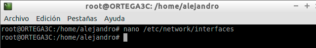
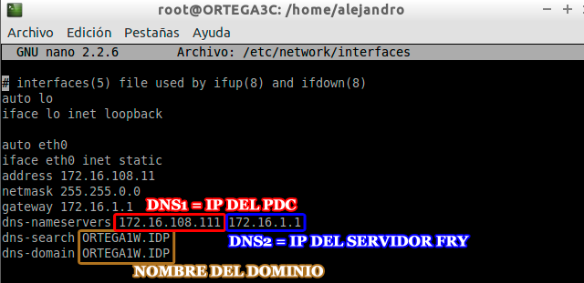
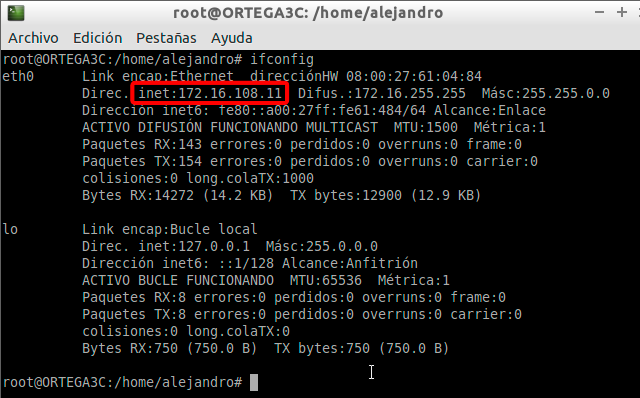
Imágenes 1-3: Configuración de red del cliente Lubuntu.
NOTA 3: otra forma de configurar los servidores DNS en Debian, es editar el archivo /etc/resolv.conf, añadiendo lo siguiente:
- search nombre-del-dominio-al-que-nos-vamos-a-unir
- nameserver ip-de-fry
- Para comprobar si la resolución de nombres (configuracion de los servidores DNS) está funcionando correctamente hacemos la siguiente prueba:
- nslookup www.iespuertodelacruz.es
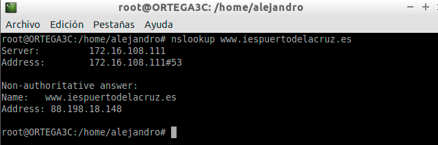
Imagen 4: Comprobar que la configuración de los servidores DNS es correcta.
Principio del punto 2 | Fin del punto 3 | Índice
3.- Unirse al dominio
- Vamos a unir el cliente Lubuntu al PDC Windows Server usando una aplicación de entorno gráfico que nos ayuda en la unión de dominios, llamada Likewise.
- Enlaces de interés: "Ubuntu Likewise".
- Para instalar Likewise en Lubuntu hay varias formas:
- Instalar los paquetes: likewise-open y likewise-open-gui.
- Descargar el paquete/instalador desde la web de Likewise, para nuestra distro.
- Descargar el código fuente, y realizar la instalación del programa (http://debian-base.blogspot.com.es/2014/01/installing-active-directory-client.html).
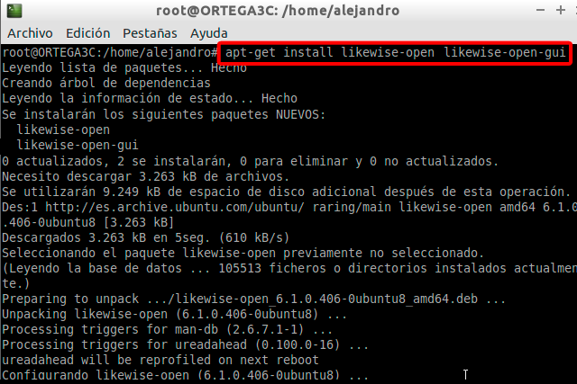
Imagen 5: Instalar los paquetes likewise-open y likewise-open-gui.
NOTA 4: OJO una vez instalado el programa Likewise, puede ser que no tengamos creado el acceso directo al programa en los menús del entorno gráfico. Si queremos saber dónde está el programa podemos ejecutar el comando "whereis domainjoin-gui".
- Para ejecutar el programa, abrimos un terminal y ponemos: domainjoin-gui
- Completamos la siguiente información de configuración:
- Computer name: dejar tal como está (ORTEGA3C en este caso)
- Domain: el dominio de nuestro PDC (ORTEGA1W.IDP en este caso)
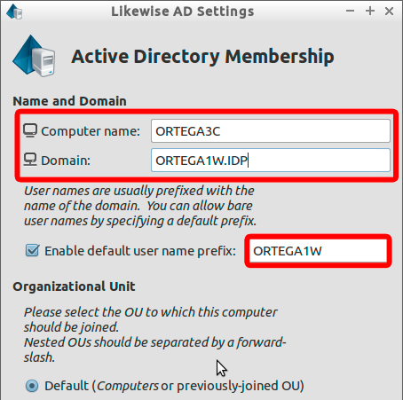
Imagen 6: Unirse al dominio con likewise.
- Luego nos pedirá usuario y contraseña. Aquí ponemos el administrador del dominio y su contraseña.
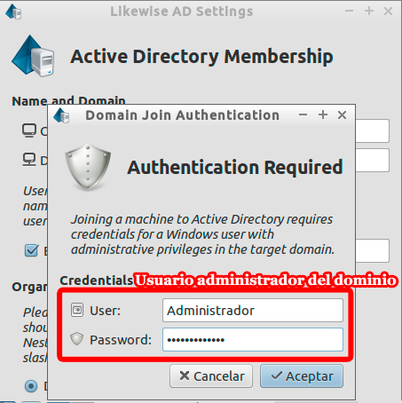
Imagen 7: Unirse al dominio con likewise.
- Luego saldrá una pantalla como que es correcto y se pide reiniciar.
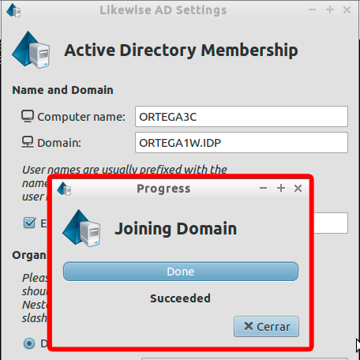
Imagen 8: Éxito al unir el equipo al dominio.
NOTA 5: el administrador del domino en Windows es "Administrador", y en GNU/Linux es "root". Otra forma de unirnos al dominio es ejecutando el comando: "domainjoin-cli join DOMINIO Administrador".
NOTA 5: si tenemos un error DNS a la hora de encontrar el servidor de dominio desde la máquina GNU/Linux, podemos incorporar la IP y el NOMBRE-DEL-DOMINIO al fichero /etc/hosts de cada máquina cliente. Esto lo hacemos para facilitar la búsqueda de la resolución de nombre e IP.
- De esta forma el equipo ha quedado unido al dominio.
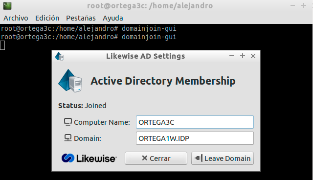
Imagen 9: Equipo unido correctamente al dominio.
Principio del punto 3 | Fin del punto 4 | Índice
4.- Comprobaciones y capturas de imágenes
4.1- Acceso
- Desde el cliente, entramos al sistema con algún usuario del dominio (yoda, por ejemplo).
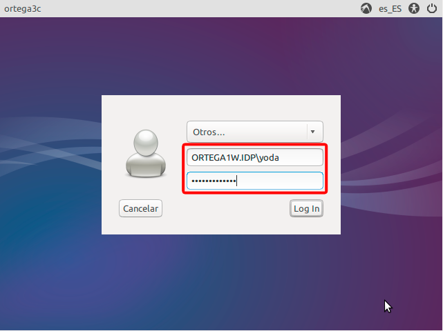
Imagen 10: Acceder al sistema con el usuario yoda.
4.2- Capturas de pantalla
- Cuando nos unimos al dominio con Likewise ("Domain join succeded").
Imagen 11: Éxito al unirse al dominio.
- En el Windows Server debe parecer en la carpeta "Computers", del "Directorio Activo", nuestra máquina GNU/Linux.
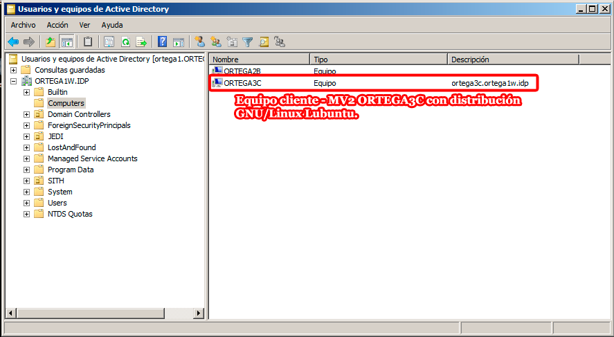
Imagen 11: Carpeta computers del AD donde aparece ORTEGA3C.
- Entrar en GNU/Linux con un usuario del dominio (yoda, por ejemplo).
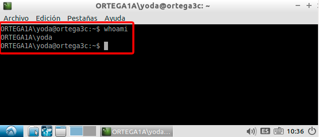
Imagen 12: Entrar con yoda en el sistema.
- Abrir consola y poner el comando: "cat /etc/passwd | grep nombre-usuario-login".
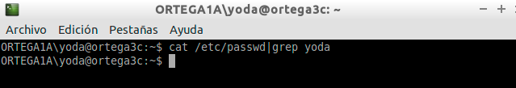
Imagen 13: Ejecutar el comando "cat /etc/passwd|grep yoda".
Principio del punto 4 | Índice
Alejandro Ortega Freire 1ºASIR
Implantación de Sistemas Operativos